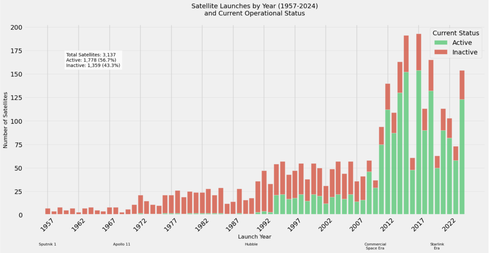
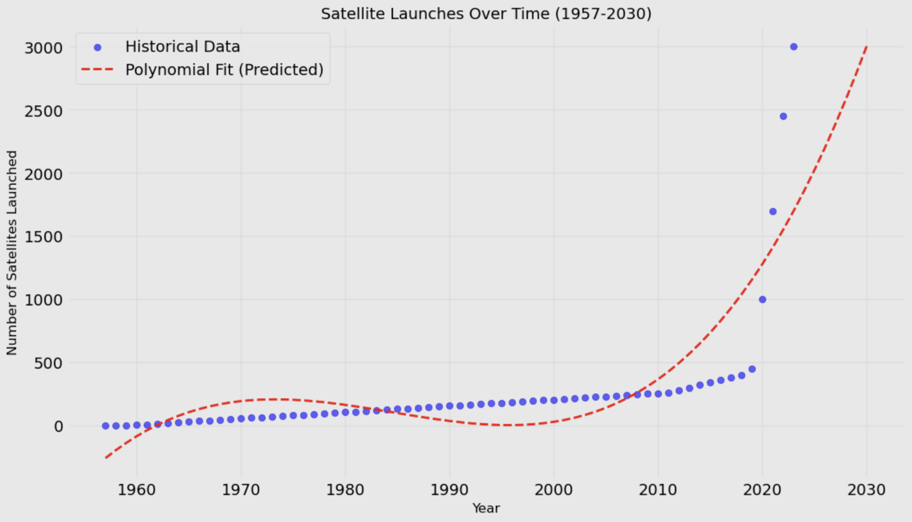

<!DOCTYPE html>
<html>
    <title>OrbitNC</title>
    <link rel="stylesheet" href="style.css">
    <link rel="preconnect" href="https://fonts.googleapis.com">
    <link rel="preconnect" href="https://fonts.gstatic.com" crossorigin>
    <link href="https://fonts.googleapis.com/css2?family=Lato:ital,wght@0,100;0,300;0,400;0,700;0,900;1,100;1,300;1,400;1,700;1,900&family=Playfair+Display:ital,wght@0,400..900;1,400..900&display=swap" rel="stylesheet">
</html>

<body>
    <div class="navbar" id="navbar">
        <a href="index.html"></a>
    </div>
    <div class="hero-container">
        <div class="hero-logo-box">
            <a href="index.html"></a>
            <div class="hero-buttons">
                <button onclick="scrollToContent()" class="home">LEARN MORE</button>
                <a href="map.html"><button class="home">VISIT TRACKER</button></a>
            </div>
        </div>
    </div>
    <div class="home-content" id="content-1">
        <div class="big-padding">
            <h2>What is Orbit?</h2>
            <p>
                The sky is filled with movement, but most of us never notice it. Every second, satellites are silently passing over our heads—enabling GPS navigation, global communication, weather forecasting, scientific research, and so much more.
                Yet despite their critical role, they remain invisible to the everyday observer. We wanted to change that. Inspired by the growing role of satellite technology in daily life, we set out to create OrbitNC, a real-time satellite tracker specifically for North Carolina.
                With the rapid rise of satellite mega-constellations, growing concern over space debris, and increasing reliance on satellites for emergency response, having an accessible way to visualize their movement is more valuable than ever.
                Whether it’s for amateur astronomers, educators, space enthusiasts, or just the curious, OrbitNC makes satellite tracking intuitive, real-time, and region-specific, bringing space just a little closer to home.
            </p>
        </div>
    </div>
    <div class="home-content">
        <div id="home-plot-big">
            <h2>Visualizing the Problem</h2>
            <div class="home-plots">
                
                
            </div>
        </div>
        <div>
            <div>
                <h2>Satellite Launches by Year</h2>
                <input type="number" id="satelliteProjectionInput" placeholder="Enter Year">
                <button onclick="satelliteProjection()" class="home-down">Calculate</button>
            </div>
            <p id="satelliteProjectionResult"></p>
            <p id="satelliteActiveResult"></p>
        </div>
    </div>
    <div class="home-content">
        <div class="big-padding">
            <h2>Our Tool</h2>
            <p>
                Orbit's key product comes from the Celestrack database which tracks Satellites. Out of the 10,000+ active satellites orbiting Earth currently, we can see how many of those satellites come over North Carolina, 
                updating multiple times daily. This application is especially useful to space organizations launching satellites themselves. At the click of a mouse, a myriad of statistics and projections are available for any location in North
                Carolina for organizations to see. Most importantly, these companies can make sure their own satellite doesn't collide with another one based on its path. Satellite collisions, which is becoming more frequent of a problem, 
                leads to so much space debris in Earth's Orbit. With this web application, we are able to minimize this issue and potentially end satellite collisions all in all.
            </p>
        </div>
        
    </div>

    <script>
        window.onscroll = function() {
            scrollFunction();
        };

        function scrollFunction() {
            var navbar = document.getElementById("navbar");
            if (document.body.scrollTop > 300 || document.documentElement.scrollTop > 300) {
                navbar.style.display = "flex";
            } else {
                navbar.style.display = "none";
            }
        }

        function scrollToContent() {
            var contentElement = document.getElementById("content-1");
            contentElement.scrollIntoView({ behavior: 'smooth'});
        }

        function satelliteProjection() {
            let year = parseInt(document.getElementById("satelliteProjectionInput").value);
            let totalSatellitesLaunched = 0;
            let activeSatellites = 0;

            if (year < 1957) {
                document.getElementById("satelliteProjectionResult").textContent = 
                    "Please enter a year from 1957 onwards (first satellite launch)";
                return;
            }

            // Calculate total satellites launched from 1957 to the input year
            for (let i = 1957; i <= year; i++) {
                let satellitesLaunched = 0;
                
                if (i >= 2020) {
                    satellitesLaunched = Math.round(466 * Math.pow(1.455, (i - 2020)));
                } else if (i >= 2010) {
                    satellitesLaunched = Math.round(78 * Math.pow(1.25, (i - 2010)));
                } else if (i >= 1990) {
                    satellitesLaunched = Math.round(36 + (3.5 * (i - 1990)));
                } else if (i >= 1957) {
                    satellitesLaunched = Math.round(1 + (1.8 * (i - 1957)));
                }

                totalSatellitesLaunched += satellitesLaunched;
            }

            // Calculate active satellites (assuming an average lifespan of 10 years)
            for (let i = 1957; i <= year; i++) {
                if (year - i <= 10) {
                    let satellitesLaunched = 0;
                    
                    if (i >= 2020) {
                        satellitesLaunched = Math.round(466 * Math.pow(1.455, (i - 2020)));
                    } else if (i >= 2010) {
                        satellitesLaunched = Math.round(78 * Math.pow(1.25, (i - 2010)));
                    } else if (i >= 1990) {
                        satellitesLaunched = Math.round(36 + (3.5 * (i - 1990)));
                    } else if (i >= 1957) {
                        satellitesLaunched = Math.round(1 + (1.8 * (i - 1957)));
                    }
                    activeSatellites += satellitesLaunched;
                }
            }

            // Display total number of satellites and active satellites
            document.getElementById("satelliteProjectionResult").textContent = 
                `Total Satellites Launched by ${year}: ${totalSatellitesLaunched}`;
            document.getElementById("satelliteActiveResult").textContent = 
                `Estimated Active Satellites by ${year}: ${activeSatellites}`;
        }
    </script>
</body>
